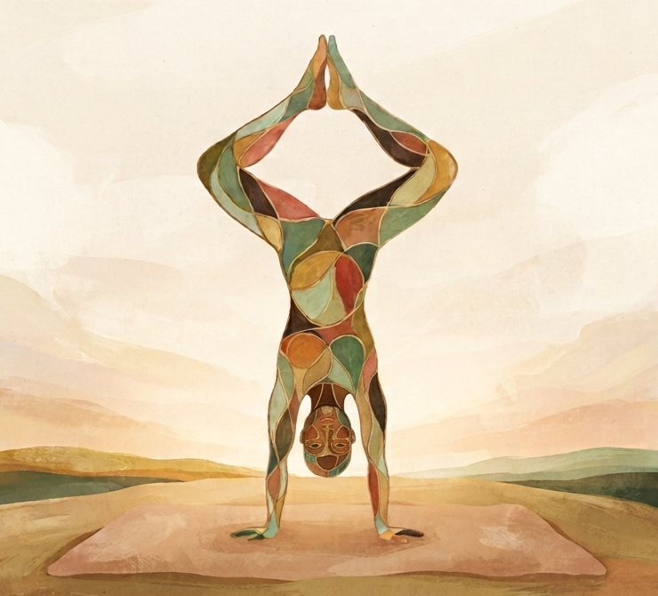

A preview for creators
Optional helps people notice their triggers early on so that they can potentially choose something else. No rules, just choices. It was created in a program that teaches people with disabilities, and an organization that supports rehabs approached us about using it.
This is our Mind Body Connect page. Your videos would play through YouTube’s own player, with your name and a link to your channel. Tap any strip to look around.
Mind Body Connect. Before you do that… thing, you might connect with your mind and body.

Tap the eyelids to hide anything you’d rather not see.